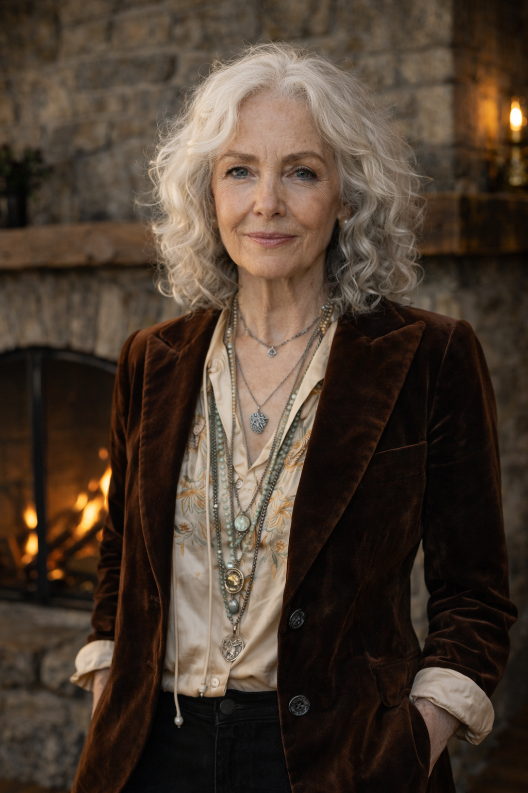

The family enterprise behind Hatfield Group.
Walker Holdings is the Los Angeles-based family office and holding structure for the Walker/Wilson business platform. It provides strategic direction, investment oversight, legal and rights stewardship, property operations, charitable giving, and long-term ownership support for operating companies including Hatfield Group.

Role
Strategic ownership, not day-to-day restaurant management.
Walker Holdings sets long-term direction, manages capital allocation, oversees trust-sensitive decisions, and protects the family's intellectual property and operating assets. Hatfield Group remains a separate Louisville-based company with David Buckner as CEO and its own corporate leadership structure.
Portfolio structure
A compact family office with significant operating reach.
LA headquarters
Strategic direction, investments, legal, tax, estate planning, property operations, and charitable giving.
WilsonWalker LLC
Private stewardship of creative rights, publishing, master recordings, archival material, and legacy approvals.
Phoenix Media
Los Angeles-based production, licensing, rights packaging, distribution, and platform relationships.
Hatfield Group
Louisville-based spirits, hospitality, wines, beverages, provisions, merchandise, and franchise operations.
Walker Foundation
The charitable giving layer for Walker family philanthropic commitments and long-term foundation work.
Walker family assets
Property operations and principal support across key family residences and private-event locations.
CEO
Eleanor Vance
Final strategic authority for Walker Holdings, capital allocation, and trust-sensitive decisions across the family enterprise.
CFO
Graham Forsyth
Oversees financial reporting, allocation, tax planning, and investment coordination with external advisors.
General Counsel
Diane Prescott
Leads legal risk, rights control, governance, and institutional legal coordination across Walker Holdings.
Relationship to Hatfield
Walker Holdings is Los Angeles-based. Hatfield Group is Louisville-based.
Walker Holdings is the majority owner and strategic parent. Hatfield Group operates independently as a professional company with its own executive team, board process, finance, HR, marketing, legal, and operations functions.